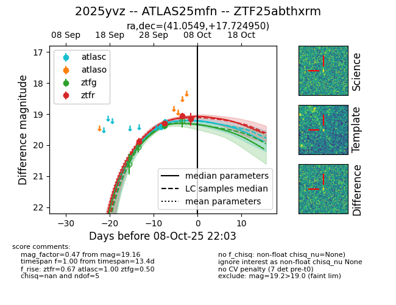
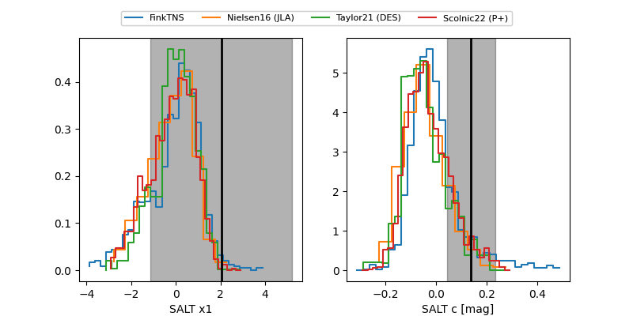

FINK: ZTF25abthxrm
Lasair: ZTF25abthxrm
ALeRCE: ZTF25abthxrm
TNS: 2025yvz
YSE: 2025yvz
ZTF25abthxrm (ztf,fink)
2025yvz (tns,yse)
ATLAS25mfn (atlas)
equatorial (ra, dec) = (41.0549,+17.72495)
galactic (l, b) = (157.4759,-37.46842)


last atlasc=19.26, ztfg=19.38, ztfr=19.16
2 atlasc, 1 ztfg, 4 ztfr detections